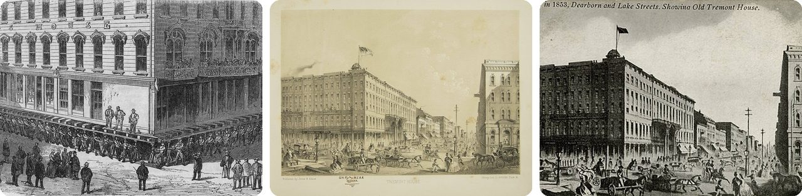
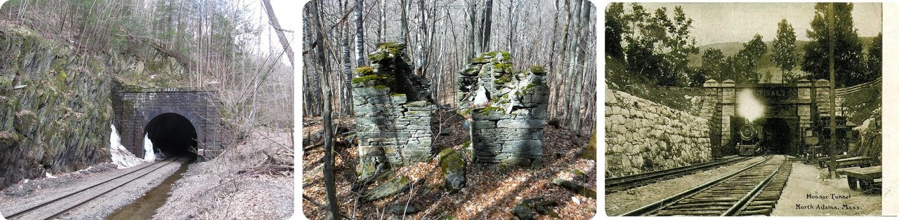
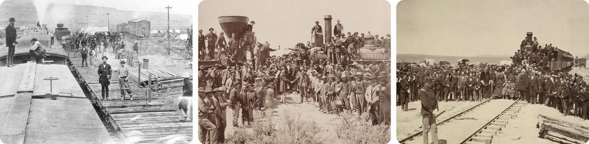
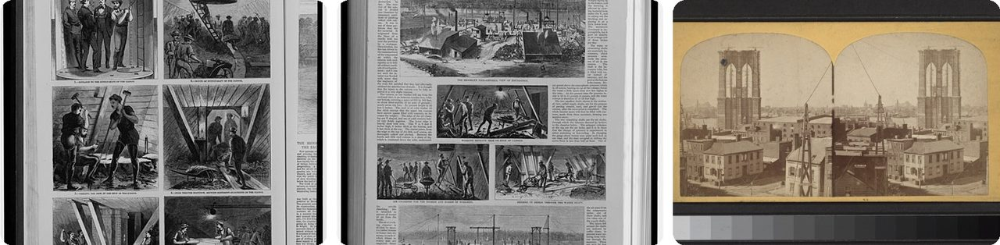
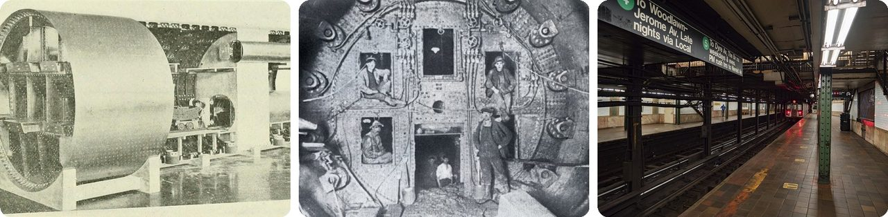
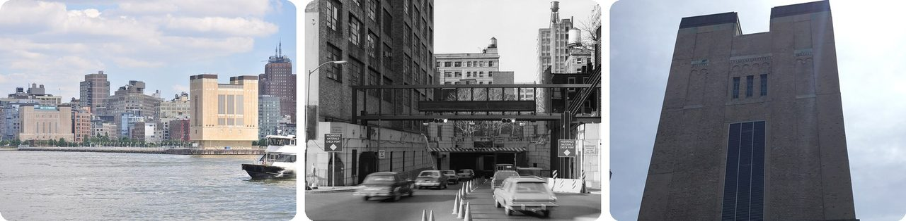
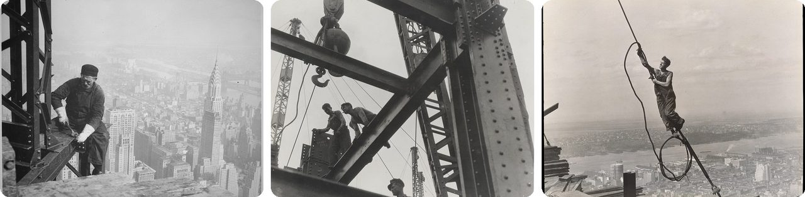
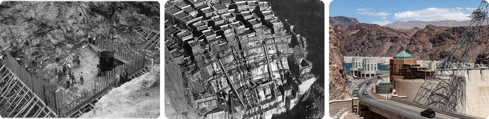
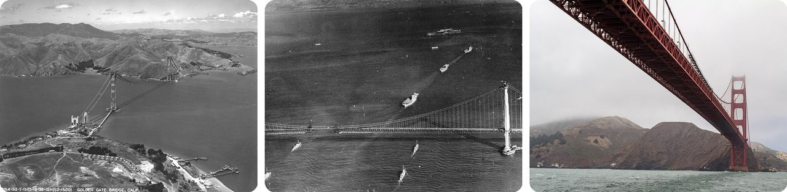
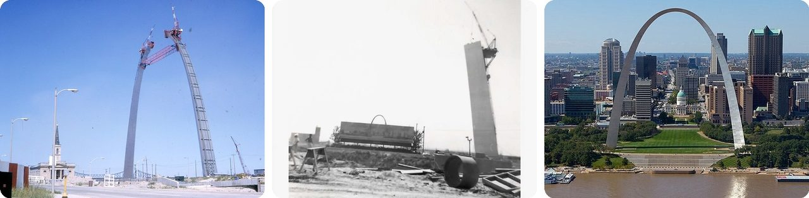

🌍 Top 10 Hazañas audaces de la construcción en EE. UU.
14 de noviembre de 2026
1. 🏨 Chicago levantó un hotel con los huéspedes adentro

En la década de 1850, Chicago estaba apenas un poco más alta que el lago Míchigan, así que sus calles siempre estaban pantanosas y el agua sucia propagaba enfermedades. En 1854, el cólera mató al seis por ciento de la gente de la ciudad.La solución: poner drenajes nuevos encima de las calles viejas, taparlos con varios pies de tierra y subir la mayoría de los edificios al nuevo nivel del suelo. Lo hicieron con gatos de tornillo, unos gatos enormes que se giraban a mano.
En 1861, 500 hombres con 1,000 gatos de tornillo levantaron el hotel Tremont House, de seis pisos, y el hotel siguió abierto todo el tiempo. Un huésped notó que los escalones de la entrada estaban cada día más empinados. Cuando se fue, las ventanas que antes le quedaban a la altura de los ojos estaban varios pies por encima de su cabeza.
O sea, el hotel entero se subió al elevador.
2. 💥 Los excavadores del túnel Hoosac se encontraron dentro de una montaña, con media pulgada de diferencia

El túnel Hoosac atraviesa una montaña de Massachusetts a lo largo de 4.75 millas (7.6 km). Las obras empezaron en 1851 y el primer tren pasó en 1875, después de que el costo creciera de 2 millones a 21 millones de dólares.Para ir más rápido, cavaron desde las dos puntas y también desde un pozo de 1,028 pies (313 m) que bajaba directo al centro, casi tan profundo como alta es la Torre Eiffel. Rompieron la roca con nitroglicerina, la primera vez que se usó a gran escala en Estados Unidos.
Los topógrafos mantenían el rumbo con torres de mira en la cima. En 1872, dos de los túneles se encontraron con apenas 9/16 de pulgada (1.4 cm) de diferencia. El precio fue terrible: 135 muertes confirmadas, y los trabajadores lo llamaban el "Pozo Sangriento".
Imagínate a dos personas cavando una hacia la otra a través de una montaña, a oscuras, y que sus palas se toquen.
3. 🚂 Cuadrillas del ferrocarril pusieron 10 millas de vía en un solo día

El 28 de abril de 1869, cuadrillas del Central Pacific en Utah tendieron 10 millas y 56 pies (unos 16 km) de vía en un solo día. Es un récord que sigue en pie.No fue suerte. El terreno ya estaba aplanado, cinco trenes cargados de rieles y durmientes estaban listos, y un ejército de trabajadores esperaba para empezar. Según cuentan, así se ganó una apuesta de 10,000 dólares.
Doce días después, el 10 de mayo de 1869, se clavó el último clavo en Promontory Summit, y el Central Pacific y el Union Pacific quedaron unidos en el primer ferrocarril que cruzaba el país.
Es como pavimentar todo el camino hasta el siguiente pueblo en una sola jornada de trabajo.
4. 🌉 Los obreros del Puente de Brooklyn cavaban el fondo del río dentro de cajas gigantes llenas de aire

Para sostener las torres del puente, hundieron en el fondo del East River dos enormes cajas de madera boca abajo llamadas cajones. Les bombeaban aire para que no entrara el agua, y los hombres bajaban a cavar el lecho del río para que la caja se hundiera más.Del lado de Manhattan, la caja bajó 78.5 pies (24 m), y el aire de adentro se apretaba a 35 libras por pulgada cuadrada, más del doble de la presión normal. Al volver a la superficie, los obreros se enfermaban de algo que el médico de la obra llamó por primera vez "enfermedad de los cajones", lo que hoy conocemos como enfermedad por descompresión. En solo cuatro meses de 1872 atendió 110 casos, y tres obreros murieron.
El ingeniero jefe, Washington Roebling, quedó paralizado por ella. Su esposa, Emily Warren Roebling, llevaba sus órdenes a la obra y dirigió buena parte del trabajo durante los siguientes 11 años.
En otras palabras, es la pesadilla de los buzos, pero en una obra de construcción.
5. 🚇 Los trenes 4 y 5 pasan por un túnel cavado dentro de aire comprimido

El túnel de Joralemon Street se inauguró el 9 de enero de 1908 y fue el primer túnel de metro entre Manhattan y Brooklyn. Hoy lo usan los trenes 4 y 5, que bajan de 91 a 95 pies (unos 28 m) por debajo de la línea de marea alta del río.Así lo cavaron. Un escudo de tunelaje, un cilindro gigante de acero de unos 17 pies (5 m) de ancho, avanzaba de 5 a 12 pies por día. Justo detrás, los obreros atornillaban anillos de hierro fundido para formar el tubo.
El truco era el aire. Cada tramo se cerraba con gruesos muros de ladrillo y esclusas de aire, y adentro se bombeaba aire a presión. Esa presión empujaba contra el agua del río y el lodo blando que querían colarse.
Y aquí viene el peligro. En marzo de 1905, el aire encontró un punto débil y salió de golpe en un "reventón", que lanzó a un obrero a través del lodo hasta el aire libre. Sobrevivió.
Piénsalo como un globo que detiene el río mientras la gente cava adentro.
6. 🌬️ Los ventiladores del túnel Holland cambian todo su aire cada 90 segundos

El túnel Holland, bajo el río Hudson entre Nueva York y Nueva Jersey, se abrió en 1927 como el primer túnel submarino para autos del mundo con ventiladores para mover el aire. El escape de los autos lleva monóxido de carbono, que es venenoso, así que un tubo largo y cerrado lleno de autos necesitaba aire fresco.Cuatro torres de ventilación, dos de ellas plantadas en medio del río, tienen 84 ventiladores. La mitad sopla aire fresco por aberturas junto a las banquetas; la otra mitad saca el aire sucio por ranuras en el techo. Juntos pueden cambiar todo el aire del túnel cada 90 segundos.
Y aquí está la conexión: su ingeniero jefe, Clifford Holland, había sido ingeniero asistente en el túnel de Joralemon Street. Murió en 1924, tres años antes de la inauguración, y el túnel lleva su nombre.
Es un extractor de baño para un túnel bajo un río.
7. 🏙️ El Empire State Building crecía cuatro pisos y medio por semana

El primer acero se colocó el 1 de abril de 1930. Los constructores mantuvieron un ritmo de cuatro pisos y medio por semana; el récord anterior para una torre así de alta era de tres y medio. En un tramo, levantaron 14 pisos en 10 días hábiles.¿Cómo? Las ventanas y otras piezas se fabricaban en serie, más de 200 camiones dejaban materiales cada día y las grúas subían el acero directo del camión a su lugar. Algunos pisos de arriba todavía se estaban diseñando mientras construían los de abajo.
La estructura quedó lista el 11 de abril de 1931, solo 410 días después de empezar y 12 días antes de lo previsto. El último remache era de oro macizo.
O sea, una torre de 102 pisos se levantó en poco más de un año.
8. 🧊 El concreto de la presa Hoover habría tardado 125 años en enfriarse

El concreto se calienta al endurecerse y se encoge al enfriarse. Los ingenieros calcularon que si la presa Hoover se vertía en una sola pieza gigante, tardaría 125 años en enfriarse, y al encogerse de forma dispareja se agrietaría hasta deshacerse.Así que la vertieron en bloques separados, algunos de 50 pies (15 m) por lado y 5 pies (1.5 m) de alto, apilados como bloques de juguete gigantes. Cada bloque tenía tubos de acero adentro. Por ellos corría agua del río y luego agua helada de una planta de refrigeración, que se llevaba el calor.
Quedaron enterradas adentro más de 582 millas (937 km) de tubería de enfriamiento. Cuando un bloque dejaba de encogerse, sus tubos se rellenaban con lechada, un cemento muy aguado.
Los constructores le pusieron a la presa su propio aire acondicionado mientras fraguaba.
9. 🕸️ Una red de seguridad bajo el Golden Gate dio origen al "Club a Medio Camino del Infierno"

La obra del puente Golden Gate empezó en 1933, con hombres trabajando muy por encima del agua. El ingeniero jefe Joseph Strauss probó algo nuevo: una red de seguridad móvil colgada debajo de ellos.Atrapó a 19 hombres durante la obra. Se pusieron el nombre de Club a Medio Camino del Infierno.
La red no podía detenerlo todo. El 17 de febrero de 1937, un andamio con 12 hombres se soltó y la atravesó. Murieron diez, y dos sobrevivieron a una caída de 200 pies (61 m) al agua. El puente se abrió ese mayo.
Piénsalo como la red de los trapecistas del circo, tendida bajo un puente.
10. 🚒 Mangueras de bomberos ayudaron a meter la última pieza del Arco Gateway

El Arco Gateway de San Luis, de 630 pies (192 m), se construyó como dos patas de secciones apiladas de acero inoxidable que tenían que encontrarse justo arriba. El 28 de octubre de 1965, subieron la clave, una pieza de 10 toneladas que llenaba un hueco de 8.5 pies (2.6 m).Pero el sol había calentado el acero, y el metal crece cuando está caliente. Las patas se habían hinchado tanto que el hueco se achicó 5 pulgadas (13 cm). Así que los obreros rociaron la pata sur con mangueras de bomberos para enfriarla y que se encogiera.
La clave entró en 13 minutos con 6 pulgadas de sobra. Las aseguradoras esperaban que murieran 13 obreros construyendo el arco; no murió nadie.
Es el truco del frasco con agua caliente, pero al revés: con agua fría y en un arco de 630 pies.
Dato curioso
El túnel de Joralemon Street del #5 guarda un secreto del lado de Brooklyn. El 58 de Joralemon Street parece una casa adosada común de 1847, pero la compañía del metro la compró en 1907, la vació por dentro y la convirtió en respiradero y salida de emergencia del túnel de abajo. La llaman "el único respiradero de metro de estilo neogriego del mundo". Londres tiene sus propias fachadas falsas en el 23–24 de Leinster Gardens, y eso hace pensar cuántas otras "casas" esconden algo.
Créditos de las fotos (Wikimedia Commons)
- #1: Briggs house.jpg by unknown.. Jonathanriley at English Wikipedia. Later version(s) were uploaded by Emijrp at English Wikipedia., Public domain
- #1: Tremont House (NBY 1730).jpg by Kurz, Louis, 1833-1921, Public domain
- #1: Chicago In 1853, Dearborn And Lake Streets, Showing Old Tremont House (NBY 415212).jpg by Unknown authorUnknown author, Public domain
- #2: Hoosac Tunnel east portal, April 2013.jpg by Doug Kerr from Albany, NY, United States, CC BY-SA 2.0
- #2: Hoosic Tunnel alignment tower.JPG by Ericshawwhite, CC BY-SA 4.0
- #2: West portal of Hoosac Tunnel 1911 postcard.jpg by Unknown authorUnknown author, Public domain
- #3: Railroad camp near Victory. 10 miles laid in one day (cropped).jpg by Alfred A. Hart, Public domain
- #3: East and West Shaking hands at the laying of last rail Union Pacific Railroad - Restoration.jpg by Andrew J. Russell / Adam Cuerden, Public domain
- #3: Laying the last rail at Promontory Summit 1869.jpg by Andrew J. Russell, Public domain
- #4: BrooklynBridgeCaisson2.jpg by Frank Leslie's illustrated newspaper, Public domain
- #4: BrooklynBridgeCaisson1.jpg by Harper's weekly, Public domain
- #4: Brooklyn Bridge tower in construction (NYPL b11708026-G91F173 002F).tiff by Scan by NYPL, Public domain
- #5: Model of a compressed air shield as used for the Pensylvania Railroad Tunnels in NYC area.jpg by Unknown authorUnknown author, Public domain
- #5: Compressed air tunneling shield used for the Hoboken and Manhattan Railroad.png by Unknown authorUnknown author, Public domain
- #5: IRT Eastern Parkway Borough Hall Northbound Platform.jpg by GeneralPunger, CC BY-SA 4.0
- #6: Holland Tunnel ventilation tower 05 (9440675291).jpg by Joe Mabel (on Flickr as Joe Mabel from Seattle, US), CC BY-SA 3.0
- #6: Haer hollandtunnel.jpg by Jet Lowe, Public domain
- #6: Holland Tunnel Ventilation Building.jpg by Kidfly182, CC BY-SA 4.0
- #7: Photograph of a Workman on the Framework of the Empire State Building - NARA - 518290.jpg by Lewis Hine, Public domain
- #7: Empire State Building Girders and Workers (6620241865).jpg by Preus museum, No restrictions
- #7: Icarus, Empire State Building MET DT1655.jpg by Lewis Hine, CC0
- #8: First 8-cubic yard batch of concrete being placed in Boulder Dam - NARA - 293883.jpg by Unknown authorUnknown author or not provided, Public domain
- #8: HooverDamConcrete.jpg by Bureau of Reclamation, Public domain
- #8: Hoover Dam, Nevada (Arizona-Nevada, USA) -- 2012 -- 6099.jpg by Dietmar Rabich, CC BY-SA 4.0
- #9: Aerial Photograph of the Golden Gate Bridge being Constructed in San Francisco, California - NARA - 7455640.jpg by Unknown authorUnknown author or not provided, Public domain
- #9: US Navy aircraft carriers passing under the Golden Gate Bridge in November 1936.jpg by U.S. Navy, Public domain
- #9: San Francisco (CA, USA), Golden Gate Bridge -- 2012 -- 4504.jpg by Dietmar Rabich, CC BY-SA 4.0
- #10: Arch Construction September 1965.jpg by Rwietlake, CC BY-SA 4.0
- #10: Construction of the Gateway Arch, St. Louis, June 1964.jpg by MBKier, CC BY-SA 4.0
- #10: Gateway Arch - St. Louis - Missouri (17275578342) (cropped).jpg by Sam valadi, CC BY 2.0

.jpg){kind=link}
.jpg){kind=link}


.jpg){kind=link}


.jpg){kind=link}


.jpg){kind=link}


_--_2012_--_6099.jpg){kind=link}


,_Golden_Gate_Bridge_--_2012_--_4504.jpg){kind=link}


_(cropped).jpg){kind=link}